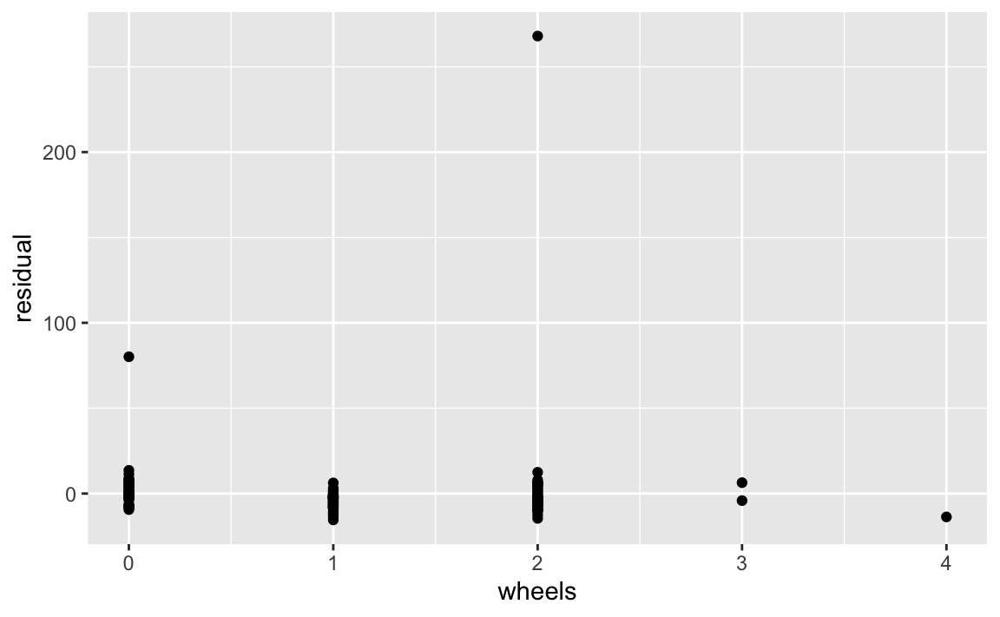
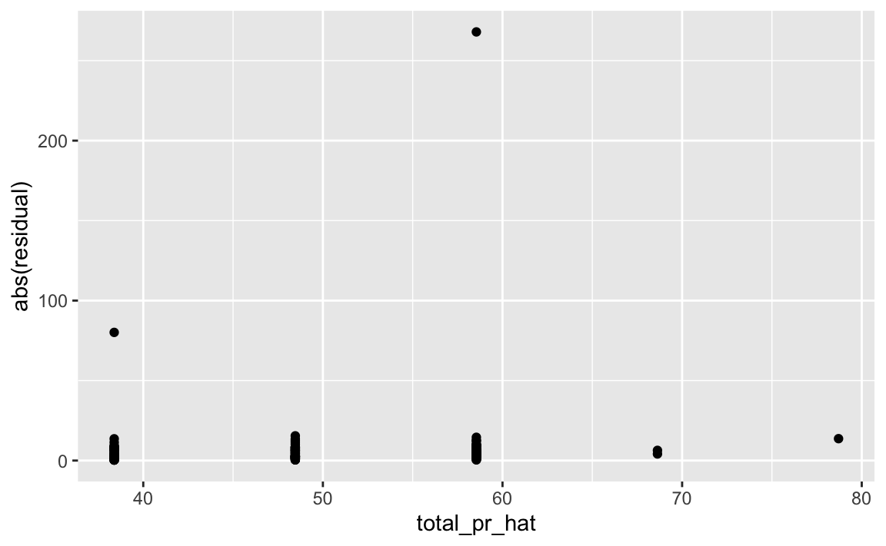
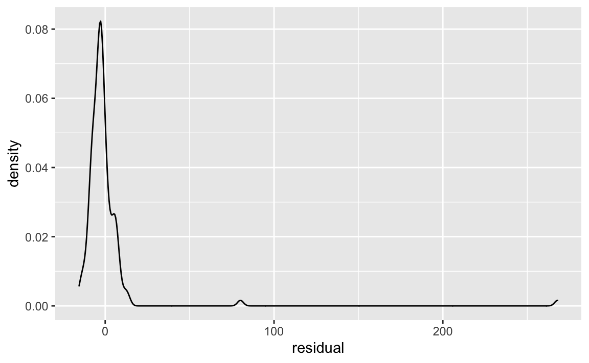

1 Hintergrund
Diese Übung bezieht sich auf ISRS, Kap. 6.3.
2 Pakete
library(tidyverse) # data wrangling
#library(broom) # tidy Regressionsoutput
library(skimr) # EDA
library(moderndive) # Komfort3 Daten laden
Auf dieser Seite sind die Daten zu finden.
d <- read_csv("https://www.openintro.org/data/csv/mariokart.csv")(“d” wie Daten.)
Wir werfen einen Blick in die Daten:
glimpse(d)
#> Rows: 143
#> Columns: 12
#> $ id <dbl> 150377422259, 260483376854, 320432342985, 280405224677, 1…
#> $ duration <dbl> 3, 7, 3, 3, 1, 3, 1, 1, 3, 7, 1, 1, 1, 1, 7, 7, 3, 3, 1, …
#> $ n_bids <dbl> 20, 13, 16, 18, 20, 19, 13, 15, 29, 8, 15, 15, 13, 16, 6,…
#> $ cond <chr> "new", "used", "new", "new", "new", "new", "used", "new",…
#> $ start_pr <dbl> 0.99, 0.99, 0.99, 0.99, 0.01, 0.99, 0.01, 1.00, 0.99, 19.…
#> $ ship_pr <dbl> 4.00, 3.99, 3.50, 0.00, 0.00, 4.00, 0.00, 2.99, 4.00, 4.0…
#> $ total_pr <dbl> 51.55, 37.04, 45.50, 44.00, 71.00, 45.00, 37.02, 53.99, 4…
#> $ ship_sp <chr> "standard", "firstClass", "firstClass", "standard", "medi…
#> $ seller_rate <dbl> 1580, 365, 998, 7, 820, 270144, 7284, 4858, 27, 201, 4858…
#> $ stock_photo <chr> "yes", "yes", "no", "yes", "yes", "yes", "yes", "yes", "y…
#> $ wheels <dbl> 1, 1, 1, 1, 2, 0, 0, 2, 1, 1, 2, 2, 2, 2, 1, 0, 1, 1, 2, …
#> $ title <chr> "~~ Wii MARIO KART & WHEEL ~ NINTENDO Wii ~ BRAND NEW…Oder lieber so:
skim(d)| Name | d |
| Number of rows | 143 |
| Number of columns | 12 |
| _______________________ | |
| Column type frequency: | |
| character | 4 |
| numeric | 8 |
| ________________________ | |
| Group variables | None |
Variable type: character
| skim_variable | n_missing | complete_rate | min | max | empty | n_unique | whitespace |
|---|---|---|---|---|---|---|---|
| cond | 0 | 1.00 | 3 | 4 | 0 | 2 | 0 |
| ship_sp | 0 | 1.00 | 5 | 10 | 0 | 8 | 0 |
| stock_photo | 0 | 1.00 | 2 | 3 | 0 | 2 | 0 |
| title | 1 | 0.99 | 13 | 59 | 0 | 80 | 0 |
Variable type: numeric
| skim_variable | n_missing | complete_rate | mean | sd | p0 | p25 | p50 | p75 | p100 | hist |
|---|---|---|---|---|---|---|---|---|---|---|
| id | 0 | 1 | 2.235290e+11 | 8.809543e+10 | 1.104392e+11 | 1.403506e+11 | 2.204911e+11 | 2.953551e+11 | 4.000775e+11 | ▇▃▅▅▃ |
| duration | 0 | 1 | 3.770000e+00 | 2.590000e+00 | 1.000000e+00 | 1.000000e+00 | 3.000000e+00 | 7.000000e+00 | 1.000000e+01 | ▇▅▂▆▁ |
| n_bids | 0 | 1 | 1.354000e+01 | 5.880000e+00 | 1.000000e+00 | 1.000000e+01 | 1.400000e+01 | 1.700000e+01 | 2.900000e+01 | ▂▅▇▃▁ |
| start_pr | 0 | 1 | 8.780000e+00 | 1.507000e+01 | 1.000000e-02 | 9.900000e-01 | 1.000000e+00 | 1.000000e+01 | 6.995000e+01 | ▇▁▁▁▁ |
| ship_pr | 0 | 1 | 3.140000e+00 | 3.210000e+00 | 0.000000e+00 | 0.000000e+00 | 3.000000e+00 | 4.000000e+00 | 2.551000e+01 | ▇▁▁▁▁ |
| total_pr | 0 | 1 | 4.988000e+01 | 2.569000e+01 | 2.898000e+01 | 4.117000e+01 | 4.650000e+01 | 5.399000e+01 | 3.265100e+02 | ▇▁▁▁▁ |
| seller_rate | 0 | 1 | 1.589842e+04 | 5.184032e+04 | 0.000000e+00 | 1.090000e+02 | 8.200000e+02 | 4.858000e+03 | 2.701440e+05 | ▇▁▁▁▁ |
| wheels | 0 | 1 | 1.150000e+00 | 8.500000e-01 | 0.000000e+00 | 0.000000e+00 | 1.000000e+00 | 2.000000e+00 | 4.000000e+00 | ▆▇▇▁▁ |
4 Fehlende Werte
Fehlende Werte können Probleme bereiten. Entfernen wir einfach alle fehlenden Werte, es sind ja nicht so viele.
d_nona <- d %>% # nona wie "no NA", keine fehlenden Werte
drop_na()5 Modell 1
Betrachten wir dieses Modell:
lm1 <- lm(total_pr ~ wheels, data = d_nona)get_regression_summaries(lm1)
#> # A tibble: 1 x 9
#> r_squared adj_r_squared mse rmse sigma statistic p_value df nobs
#> <dbl> <dbl> <dbl> <dbl> <dbl> <dbl> <dbl> <dbl> <dbl>
#> 1 0.11 0.103 587. 24.2 24.4 17.3 0 1 142get_regression_table(lm1)
#> # A tibble: 2 x 7
#> term estimate std_error statistic p_value lower_ci upper_ci
#> <chr> <dbl> <dbl> <dbl> <dbl> <dbl> <dbl>
#> 1 intercept 38.4 3.44 11.1 0 31.6 45.2
#> 2 wheels 10.1 2.43 4.15 0 5.28 14.96 Überprüfen der Annahmen
Die vorhergesagten Werte und die Residuen kann man sich so ausgeben lassen:
get_regression_points(lm1)
#> # A tibble: 142 x 5
#> ID total_pr wheels total_pr_hat residual
#> <int> <dbl> <dbl> <dbl> <dbl>
#> 1 1 51.6 1 48.5 3.09
#> 2 2 37.0 1 48.5 -11.4
#> 3 3 45.5 1 48.5 -2.96
#> 4 4 44 1 48.5 -4.46
#> 5 5 71 2 58.5 12.5
#> 6 6 45 0 38.4 6.62
#> 7 7 37.0 0 38.4 -1.36
#> 8 8 54.0 2 58.5 -4.56
#> 9 9 47 1 48.5 -1.46
#> 10 10 50 1 48.5 1.54
#> # … with 132 more rows6.1 Linearität
get_regression_points(lm1) %>%
ggplot(aes(x = wheels, y = residual)) +
geom_point()
Hier böte es sich an, zunächst auf Ausreißer hin zu kontrollieren.
6.2 Varianzgleichheit der Residuen
get_regression_points(lm1) %>%
ggplot(aes(x = total_pr_hat, y = abs(residual))) +
geom_point()
6.3 Normalverteilung der Residuen
get_regression_points(lm1) %>%
ggplot(aes(x = residual)) +
geom_density()
7 Reproducibility
#> ─ Session info ───────────────────────────────────────────────────────────────────────────────────────────────────────
#> setting value
#> version R version 4.0.2 (2020-06-22)
#> os macOS Catalina 10.15.7
#> system x86_64, darwin17.0
#> ui X11
#> language (EN)
#> collate en_US.UTF-8
#> ctype en_US.UTF-8
#> tz Europe/Berlin
#> date 2020-12-10
#>
#> ─ Packages ───────────────────────────────────────────────────────────────────────────────────────────────────────────
#> package * version date lib source
#> assertthat 0.2.1 2019-03-21 [1] CRAN (R 4.0.0)
#> backports 1.2.0 2020-11-02 [1] CRAN (R 4.0.2)
#> blogdown 0.21 2020-10-11 [1] CRAN (R 4.0.2)
#> bookdown 0.21 2020-10-13 [1] CRAN (R 4.0.2)
#> broom 0.7.2 2020-10-20 [1] CRAN (R 4.0.2)
#> callr 3.5.1 2020-10-13 [1] CRAN (R 4.0.2)
#> cellranger 1.1.0 2016-07-27 [1] CRAN (R 4.0.0)
#> cli 2.2.0 2020-11-20 [1] CRAN (R 4.0.2)
#> codetools 0.2-16 2018-12-24 [2] CRAN (R 4.0.2)
#> colorspace 2.0-0 2020-11-11 [1] CRAN (R 4.0.2)
#> crayon 1.3.4 2017-09-16 [1] CRAN (R 4.0.0)
#> DBI 1.1.0 2019-12-15 [1] CRAN (R 4.0.0)
#> dbplyr 2.0.0 2020-11-03 [1] CRAN (R 4.0.2)
#> desc 1.2.0 2018-05-01 [1] CRAN (R 4.0.0)
#> devtools 2.3.2 2020-09-18 [1] CRAN (R 4.0.2)
#> digest 0.6.27 2020-10-24 [1] CRAN (R 4.0.2)
#> dplyr * 1.0.2 2020-08-18 [1] CRAN (R 4.0.2)
#> ellipsis 0.3.1 2020-05-15 [1] CRAN (R 4.0.0)
#> evaluate 0.14 2019-05-28 [1] CRAN (R 4.0.0)
#> fansi 0.4.1 2020-01-08 [1] CRAN (R 4.0.0)
#> forcats * 0.5.0 2020-03-01 [1] CRAN (R 4.0.0)
#> fs 1.5.0 2020-07-31 [1] CRAN (R 4.0.2)
#> generics 0.1.0 2020-10-31 [1] CRAN (R 4.0.2)
#> ggplot2 * 3.3.2 2020-06-19 [1] CRAN (R 4.0.0)
#> glue 1.4.2 2020-08-27 [1] CRAN (R 4.0.2)
#> gtable 0.3.0 2019-03-25 [1] CRAN (R 4.0.0)
#> haven 2.3.1 2020-06-01 [1] CRAN (R 4.0.0)
#> hms 0.5.3 2020-01-08 [1] CRAN (R 4.0.0)
#> htmltools 0.5.0 2020-06-16 [1] CRAN (R 4.0.0)
#> httr 1.4.2 2020-07-20 [1] CRAN (R 4.0.2)
#> jsonlite 1.7.1 2020-09-07 [1] CRAN (R 4.0.2)
#> knitr 1.30 2020-09-22 [1] CRAN (R 4.0.2)
#> lifecycle 0.2.0 2020-03-06 [1] CRAN (R 4.0.0)
#> lubridate 1.7.9.2 2020-11-13 [1] CRAN (R 4.0.2)
#> magrittr 2.0.1 2020-11-17 [1] CRAN (R 4.0.2)
#> memoise 1.1.0 2017-04-21 [1] CRAN (R 4.0.0)
#> modelr 0.1.8 2020-05-19 [1] CRAN (R 4.0.0)
#> munsell 0.5.0 2018-06-12 [1] CRAN (R 4.0.0)
#> pillar 1.4.7 2020-11-20 [1] CRAN (R 4.0.2)
#> pkgbuild 1.1.0 2020-07-13 [1] CRAN (R 4.0.2)
#> pkgconfig 2.0.3 2019-09-22 [1] CRAN (R 4.0.0)
#> pkgload 1.1.0 2020-05-29 [1] CRAN (R 4.0.0)
#> prettyunits 1.1.1 2020-01-24 [1] CRAN (R 4.0.0)
#> processx 3.4.5 2020-11-30 [1] CRAN (R 4.0.2)
#> ps 1.4.0 2020-10-07 [1] CRAN (R 4.0.2)
#> purrr * 0.3.4 2020-04-17 [1] CRAN (R 4.0.0)
#> R6 2.5.0 2020-10-28 [1] CRAN (R 4.0.2)
#> Rcpp 1.0.5 2020-07-06 [1] CRAN (R 4.0.2)
#> readr * 1.4.0 2020-10-05 [1] CRAN (R 4.0.2)
#> readxl 1.3.1 2019-03-13 [1] CRAN (R 4.0.0)
#> remotes 2.2.0 2020-07-21 [1] CRAN (R 4.0.2)
#> reprex 0.3.0 2019-05-16 [1] CRAN (R 4.0.0)
#> rlang 0.4.9 2020-11-26 [1] CRAN (R 4.0.2)
#> rmarkdown 2.5 2020-10-21 [1] CRAN (R 4.0.2)
#> rprojroot 2.0.2 2020-11-15 [1] CRAN (R 4.0.2)
#> rstudioapi 0.13.0-9000 2020-12-09 [1] Github (rstudio/rstudioapi@4baeb39)
#> rvest 0.3.6 2020-07-25 [1] CRAN (R 4.0.2)
#> scales 1.1.1 2020-05-11 [1] CRAN (R 4.0.0)
#> sessioninfo 1.1.1 2018-11-05 [1] CRAN (R 4.0.0)
#> stringi 1.5.3 2020-09-09 [1] CRAN (R 4.0.2)
#> stringr * 1.4.0 2019-02-10 [1] CRAN (R 4.0.0)
#> testthat 3.0.0 2020-10-31 [1] CRAN (R 4.0.2)
#> tibble * 3.0.4 2020-10-12 [1] CRAN (R 4.0.2)
#> tidyr * 1.1.2 2020-08-27 [1] CRAN (R 4.0.2)
#> tidyselect 1.1.0 2020-05-11 [1] CRAN (R 4.0.0)
#> tidyverse * 1.3.0 2019-11-21 [1] CRAN (R 4.0.0)
#> usethis 1.6.3 2020-09-17 [1] CRAN (R 4.0.2)
#> vctrs 0.3.5 2020-11-17 [1] CRAN (R 4.0.2)
#> withr 2.3.0 2020-09-22 [1] CRAN (R 4.0.2)
#> xfun 0.19 2020-10-30 [1] CRAN (R 4.0.2)
#> xml2 1.3.2 2020-04-23 [1] CRAN (R 4.0.0)
#> yaml 2.2.1 2020-02-01 [1] CRAN (R 4.0.0)
#>
#> [1] /Users/sebastiansaueruser/Rlibs
#> [2] /Library/Frameworks/R.framework/Versions/4.0/Resources/library